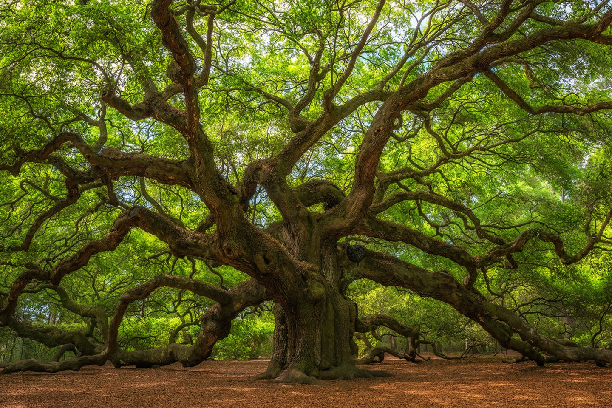
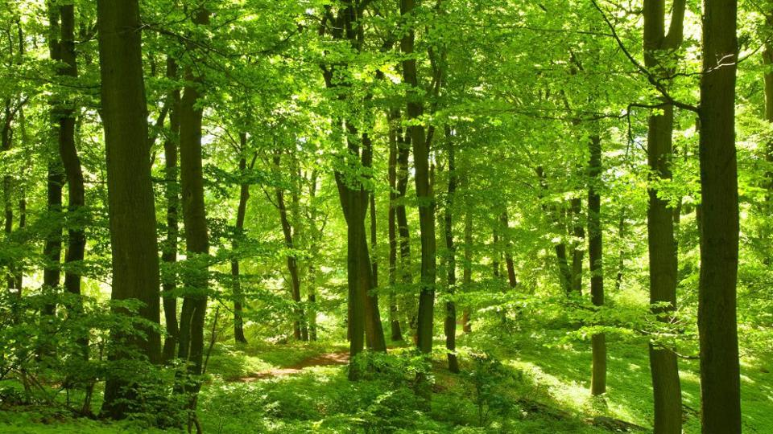

Bäume sind leicht zu erkennen. Sie bestehen aus einem braunem Stamm und einer Baumkrone, die aus vielen verzweigten Ästen und grünen Blättern besteht.
Bäume sind nicht selten, obwohl das natürlich abhängig davon ist, wo du lebst. Hier in Deutschland wachsen Bäume fast überall: am Wegrand, in Parks, auf Feldern und vor allem in Wäldern. Wälder sind riesige Orte, wo es fast nur Bäume gibt. Du solltest auf jeden Fall mal in einen Wald gehen!
